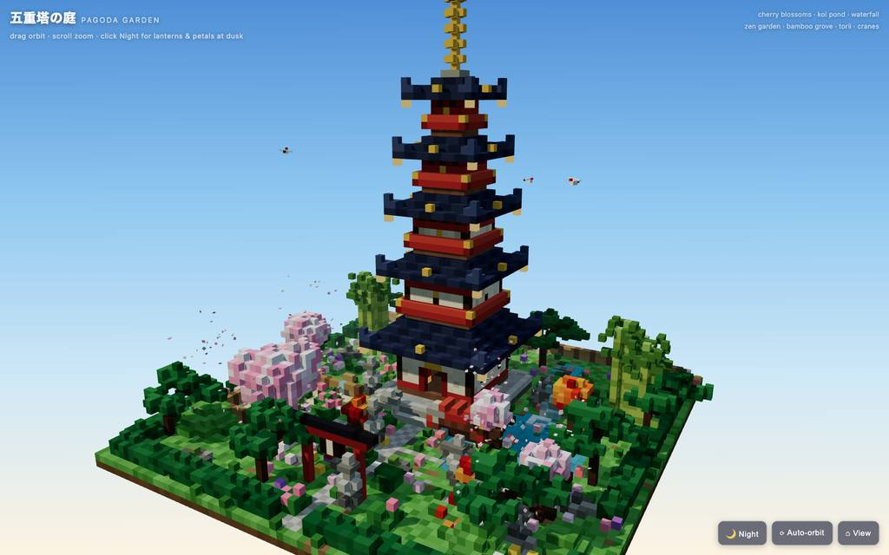
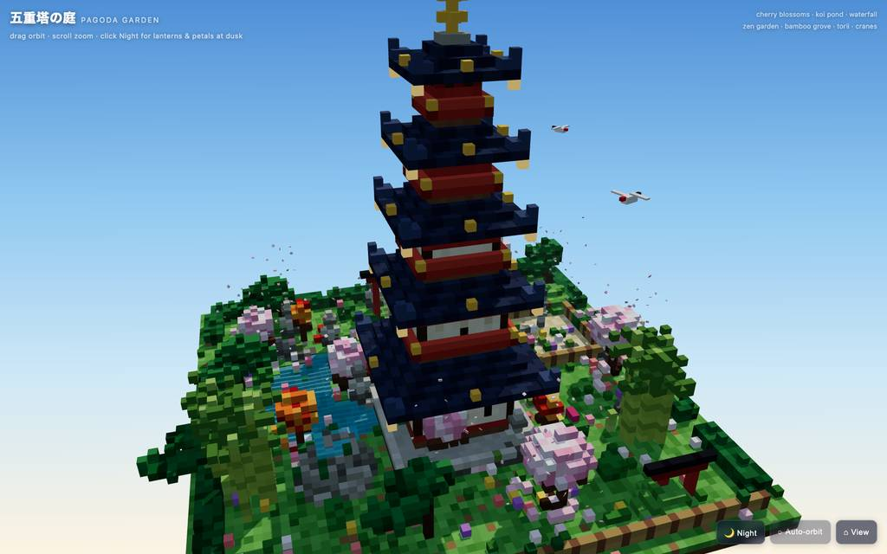
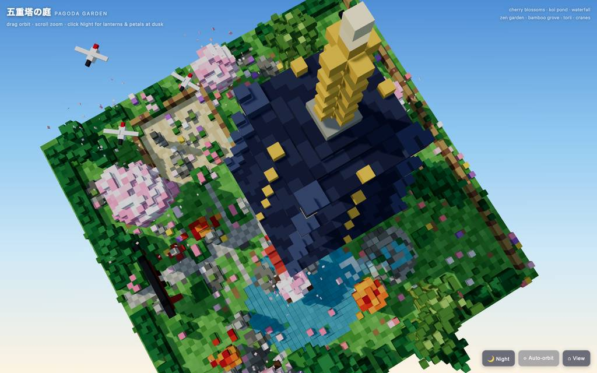
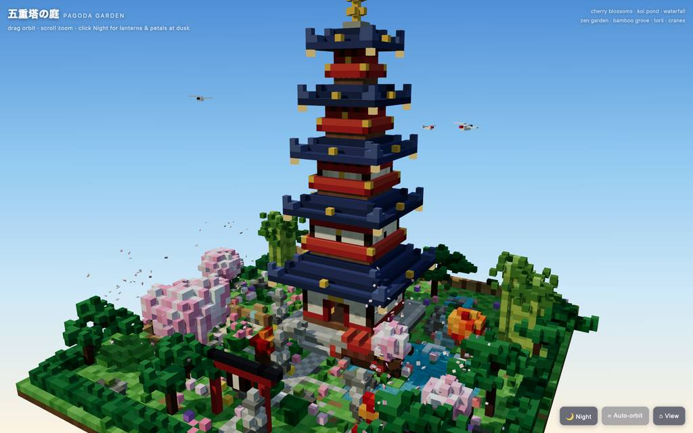
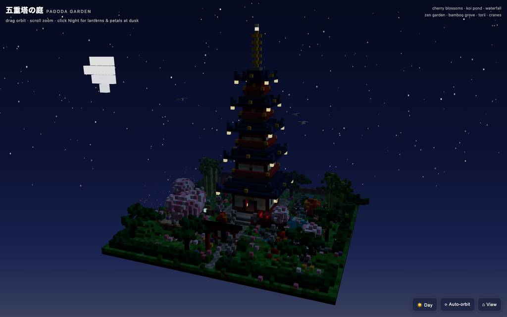
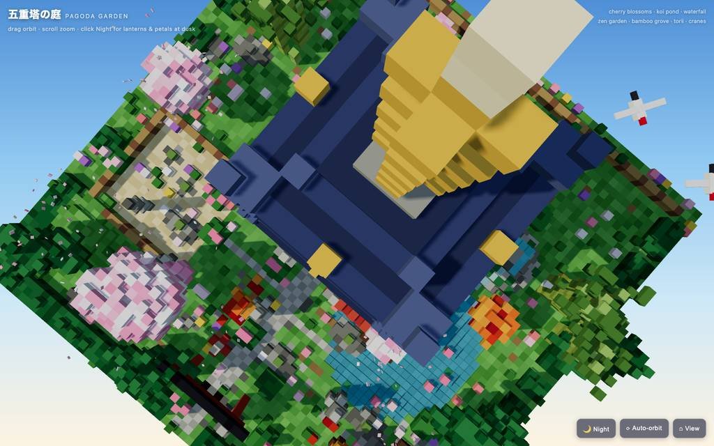

runs / 2026-10-26 / 213244-817000-strata-huihui-q3.8-fn-q4-xs-6819ff22
書き直しとedit拒否6件を挟み、約23分で単一HTMLのボクセル庭園を完成
huihui-qwen3.8-flash-next-abliterated-v2 (IQ4_XS) が Strata 0.1.48 / llama.cpp で、単一HTMLのボクセル五重塔庭園を作った実行。49呼び出し・計1,399.7秒で status=completed (exit 0)、出力計87,385トークン。序盤約886秒で執筆とリライトを済ませ、残りはヘッドレスブラウザのスクショ14枚を頼りに修正を回し、35,763バイトの成果物で終えた。
成果物
work/voxel-pagoda-garden.html（35,763 バイト）をそのまま同梱している。重いシーンもあるため、必要なときだけ起動する。
voxel-pagoda-garden.html
35 KB · 起動するまで読み込まない












全 14 枚から等間隔に 12 枚を選んでいる。logs/events.jsonl の画像ブロックを内容ハッシュで重複排除して時系列に並べた、制作中の検証用スクリーンショット。最終版とは限らない。
成果物の構成
| 要素 | 内容 |
|---|---|
| 成果物 | voxel-pagoda-garden.html 単一ファイル。Three.jsのCDN importのため初回はネット接続が必要 |
| 規模 | 約13,700ボクセル。シード済みRNGで読み込みごとに同一のシーン |
| 五重塔 | 段違い瓦屋根（同心の瓦列・raised棟・反り上がり軒先・金色の鬼瓦と釣鈴）、朱の斗栱と梁、金框の开放式入口に座仏と発光光背、輪層の金色相輪と宝玉。石基壇・大石段・狛犬2体 |
| 庭園 | 6匹の鯉と揺らぐ半透明水面の池、岩棚の発光する滝と飛沫、桜島へ架かる朱の拱橋、蓮、岩を巡る同心砂紋の禅庭と迷你石塔、竹林・刈り込み松・落葉する紅葉、鳥居2基（額束付き）と石灯籠7基、地蔵、つくばい、垣根 |
| 空と動き | 桜吹雪300、舞い飛ぶ鶴3羽、昼夜切替（グラデ空・星空・月の昇り・灯りや鈴のまたたき）、auto-orbitと減衰付き視点、霧、ソフトシャドウ |
| 検証 | Chromiumで軌道・ズーム・昼/夜両状態・池/橋/禅のクローズアップまで確認済みと報告 |
モデルの最終メッセージから読み取った内容。コードの確認はしていない。
タイムライン
49 回の API 呼び出しを時間順に並べた。上段の帯の幅が各呼び出しの所要時間で、帯の間の空白がツールの実行時間。下段はその時点のコンテキスト長。細い帯は、エージェントが別に投げた補助リクエスト（画像判定など）。 upstream が usage を返さない場合は、events.jsonl の message_end から復元する。復元できない値は ? で示す。
最も長い 2 回の生成（#5 334 秒・#4 238 秒）で 572.9 秒、壁時計の 41.0%。出力トークンの上位 4 回（#5・#4・#3・#2）で全体の 73.3%（64,023 / 87,385）。推論以外（ツール実行など）は約 50 秒（4%）。
フェーズ別の内訳
| フェーズ | 経過 | 所要 | 全体に占める割合 | 呼び出し | 出力 tok | 何をしたか |
|---|---|---|---|---|---|---|
| 計画と初稿 | 0:00–14:46 | 886 秒 | 63.3% | 5 | 64,573 | 作業ディレクトリ確認とeval仕様読込、todoで工程計画の後、#4でHTMLを書き、#5でクリーンリライトした。この5呼び出しで43,505の出力トークンを使う。 |
| 初回描画と修正 | 14:46–16:46 | 120 秒 | 8.6% | 13 | 6,129 | ブラウザでページを開き初回スクショとコンソールを確認（TypeError 1件）。カメラ・太陽円盤・鳥居額束の修正は#11/#13/#15のeditが3連続でアンカー拒否され、bash/readで所在を特定し直して#17で適用した。 |
| 鶴の作り直し | 16:46–18:28 | 101 秒 | 7.3% | 8 | 5,603 | 鶴のアニメブロックを読み、5つの接続パーツへ作り直した。#20のedit拒否は#21のread後に#22で再適用し、入口ズームや池・橋まわりの軌道視点をevalで確認した。 |
| 屋根の再構築 | 18:28–20:42 | 135 秒 | 9.6% | 11 | 6,037 | todoで制作フェーズ完了を記録（1件はphase名欠落でエラー）。屋根ビルダーを全文読み、瓦の筋・棟・急勾配化を#34の拒否を経て#36で適用、#37で屋根描画を確認した。 |
| 夜空の調整 | 20:42–21:47 | 65 秒 | 4.6% | 5 | 2,258 | 夜モード確認で星空の筋と月の位置に問題を見つけ、#39でsky関数を読んだ後、#40のedit拒否を#41で再適用し#42の夜景evalで確認した。 |
| 最終検証 | 21:47–23:19 | 91 秒 | 6.5% | 7 | 2,785 | 昼の池クローズアップ・鯉詳細・残ゴミシンボルgrep・ヒーローショットをevalで順に確認し、タブを閉じてtodoを締め、#49の最終報告で終えた。 |
フェーズの切れ目は、ログから読み取れる作業内容の変わり目（LLM による区切り）。所要時間は、そのフェーズの最初の呼び出しの開始から次のフェーズの最初の呼び出しの開始まで。
49 回の呼び出しを表で見る
| # | 種別 | フェーズ | 開始 | 所要 秒 | prompt | うち cache | 出力 | tok/s | HTTP | ツール |
|---|---|---|---|---|---|---|---|---|---|---|
| 1 | 補助 | 計画と初稿 | 0:00 | 7.8 | 180 | 0 | 550 | 77.5 | 200 | — |
| 2 | 主ループ | 計画と初稿 | 0:00 | 102.4 | 8,009 | 0 | 6,100 | 66.8 | 200 | bash + read |
| 3 | 主ループ | 計画と初稿 | 1:43 | 210.4 | 17,443 | 14,108 | 14,418 | 69.1 | 200 | todo |
| 4 | 主ループ | 計画と初稿 | 5:13 | 238.5 | 32,072 | 17,438 | 18,793 | 80.4 | 200 | write |
| 5 | 主ループ | 計画と初稿 | 9:11 | 334.4 | 50,908 | 32,067 | 24,712 | 75.4 | 200 | write |
| 6 | 主ループ | 初回描画と修正 | 14:46 | 13.5 | 75,667 | 75,621 | 799 | 62.3 | 200 | eval |
| 7 | 主ループ | 初回描画と修正 | 15:04 | 3.9 | 76,801 | 76,466 | 217 | 70.3 | 200 | eval |
| 8 | 主ループ | 初回描画と修正 | 15:10 | 3.4 | 77,237 | 77,019 | 169 | 62.5 | 200 | eval |
| 9 | 主ループ | 初回描画と修正 | 15:13 | 15.4 | 78,211 | 77,405 | 876 | 62.5 | 200 | read |
| 10 | 主ループ | 初回描画と修正 | 15:29 | 12.5 | 79,381 | 79,087 | 696 | 59.8 | 200 | bash |
| 11 | 主ループ | 初回描画と修正 | 15:41 | 26.1 | 80,283 | 80,076 | 1,602 | 63.1 | 200 | edit |
| 12 | 主ループ | 初回描画と修正 | 16:07 | 3.5 | 82,229 | 81,886 | 160 | 63.4 | 200 | bash |
| 13 | 主ループ | 初回描画と修正 | 16:11 | 4.7 | 82,465 | 82,388 | 272 | 65.9 | 200 | edit |
| 14 | 主ループ | 初回描画と修正 | 16:15 | 4.6 | 82,921 | 82,738 | 221 | 58.3 | 200 | read |
| 15 | 主ループ | 初回描画と修正 | 16:20 | 7.4 | 83,758 | 83,142 | 451 | 70.6 | 200 | edit |
| 16 | 主ループ | 初回描画と修正 | 16:27 | 1.8 | 84,359 | 84,208 | 70 | 61.8 | 200 | read |
| 17 | 主ループ | 初回描画と修正 | 16:29 | 6.5 | 84,698 | 84,430 | 409 | 71.6 | 200 | edit |
| 18 | 主ループ | 初回描画と修正 | 16:36 | 4.0 | 85,743 | 85,108 | 187 | 63.9 | 200 | eval |
| 19 | 主ループ | 鶴の作り直し | 16:46 | 21.5 | 87,460 | 85,930 | 1,229 | 62.0 | 200 | read |
| 20 | 主ループ | 鶴の作り直し | 17:08 | 16.0 | 89,422 | 88,689 | 1,006 | 67.1 | 200 | edit |
| 21 | 主ループ | 鶴の作り直し | 17:24 | 5.8 | 90,573 | 90,429 | 330 | 64.8 | 200 | read |
| 22 | 主ループ | 鶴の作り直し | 17:30 | 13.4 | 91,722 | 90,903 | 898 | 73.2 | 200 | edit |
| 23 | 主ループ | 鶴の作り直し | 17:43 | 14.3 | 93,189 | 92,620 | 902 | 68.2 | 200 | eval |
| 24 | 主ループ | 鶴の作り直し | 18:02 | 2.8 | 94,188 | 94,090 | 152 | 67.9 | 200 | eval |
| 25 | 主ループ | 鶴の作り直し | 18:06 | 12.1 | 95,144 | 94,341 | 721 | 66.8 | 200 | eval |
| 26 | 主ループ | 鶴の作り直し | 18:20 | 6.5 | 96,669 | 95,864 | 365 | 69.7 | 200 | eval |
| 27 | 主ループ | 屋根の再構築 | 18:28 | 25.2 | 97,231 | 32,067 | 321 | 64.6 | 200 | todo |
| 28 | 主ループ | 屋根の再構築 | 18:53 | 5.1 | 97,677 | 97,551 | 263 | 58.9 | 200 | todo |
| 29 | 主ループ | 屋根の再構築 | 18:58 | 3.9 | 98,074 | 97,939 | 202 | 61.6 | 200 | todo |
| 30 | 主ループ | 屋根の再構築 | 19:02 | 4.6 | 98,496 | 98,277 | 286 | 73.0 | 200 | eval |
| 31 | 主ループ | 屋根の再構築 | 19:09 | 33.3 | 98,943 | 81,219 | 1,617 | 61.3 | 200 | read |
| 32 | 主ループ | 屋根の再構築 | 19:42 | 3.1 | 101,360 | 100,560 | 118 | 59.8 | 200 | bash |
| 33 | 主ループ | 屋根の再構築 | 19:45 | 17.1 | 101,650 | 101,478 | 1,090 | 66.3 | 200 | read |
| 34 | 主ループ | 屋根の再構築 | 20:02 | 8.9 | 103,591 | 102,740 | 492 | 63.3 | 200 | edit |
| 35 | 主ループ | 屋根の再構築 | 20:11 | 2.9 | 104,252 | 104,084 | 120 | 56.8 | 200 | read |
| 36 | 主ループ | 屋根の再構築 | 20:14 | 20.3 | 104,756 | 104,373 | 1,286 | 66.1 | 200 | edit |
| 37 | 主ループ | 屋根の再構築 | 20:34 | 4.7 | 106,618 | 106,042 | 242 | 64.8 | 200 | eval |
| 38 | 主ループ | 夜空の調整 | 20:42 | 16.4 | 107,008 | 81,219 | 405 | 60.7 | 200 | eval |
| 39 | 主ループ | 夜空の調整 | 21:02 | 22.3 | 107,561 | 81,219 | 799 | 63.0 | 200 | read |
| 40 | 主ループ | 夜空の調整 | 21:24 | 7.9 | 108,908 | 108,360 | 463 | 67.0 | 200 | edit |
| 41 | 主ループ | 夜空の調整 | 21:32 | 5.5 | 109,536 | 109,370 | 334 | 70.0 | 200 | edit |
| 42 | 主ループ | 夜空の調整 | 21:38 | 4.9 | 110,255 | 109,873 | 257 | 65.8 | 200 | eval |
| 43 | 主ループ | 最終検証 | 21:47 | 18.1 | 110,659 | 81,219 | 500 | 63.4 | 200 | eval |
| 44 | 主ループ | 最終検証 | 22:09 | 18.0 | 111,309 | 81,219 | 511 | 66.6 | 200 | eval |
| 45 | 主ループ | 最終検証 | 22:29 | 20.2 | 112,040 | 81,219 | 595 | 61.3 | 200 | bash |
| 46 | 主ループ | 最終検証 | 22:50 | 3.1 | 112,726 | 112,635 | 150 | 61.0 | 200 | eval |
| 47 | 主ループ | 最終検証 | 22:56 | 11.4 | 113,026 | 97,603 | 357 | 62.0 | 200 | eval + todo |
| 48 | 主ループ | 最終検証 | 23:07 | 3.5 | 113,603 | 113,384 | 184 | 66.9 | 200 | todo + todo |
| 49 | 主ループ | 最終検証 | 23:11 | 7.9 | 114,133 | 113,787 | 488 | 68.6 | 200 |
試行錯誤
ツールがエラー（isError）を返した結果の一覧。ツールは成功したのにモデル自身が内容を壊したケースは、ここには出ない。
エラーとして記録された 9 件
| 経過 | ツール | 起きたこと | 分類 |
|---|---|---|---|
| 14:59 | eval | タブopen直後の初回evalで (logs||[]).slice is not a function のTypeErrorが返った。Opened tab "garden" on headless browser (hidden, shared) URL: file://~ Title: 五重塔の庭 — Voxel Pagoda Garden TypeError: (logs||[]).slice is not a function. (In '( | eval 型エラー |
| 16:07 | edit | カメラ等4修正の#11が、未表示の487/492/543/615-616行をアンカーして不発した。This edit anchors to lines 487, 492, 543, 615-616 of voxel-pagoda-garden.html that [voxel-pagoda-garden.html#1CAB] never displayed (it showed a partial range, a search hit, or a folded summary). Actua | edit 拒否 |
| 16:15 | edit | 再適用の#13が329行の未表示指定で拒否され、#12のbash行検索を経ても解消していなかった。This edit anchors to lines 329 of voxel-pagoda-garden.html that [voxel-pagoda-garden.html#1CAB] never displayed (it showed a partial range, a search hit, or a folded summary). Actual file content at t | edit 拒否 |
| 16:27 | edit | 3度目の#15も610行の未表示指定で拒否。#16のread後に#17で通った。This edit anchors to lines 610 of voxel-pagoda-garden.html that [voxel-pagoda-garden.html#1CAB] never displayed (it showed a partial range, a search hit, or a folded summary). Actual file content at t | edit 拒否 |
| 17:24 | edit | 鶴を5接続パーツ化する#20が704行の未表示指定で拒否。#22で再適用した。This edit anchors to lines 704 of voxel-pagoda-garden.html that [voxel-pagoda-garden.html#ECD4] never displayed (it showed a partial range, a search hit, or a folded summary). Actual file content at t | edit 拒否 |
| 17:57 | eval | 入口表示のeval(#23)で aria/Auto-orbit クリックが2,000msで失敗。以後はズーム操作で続行した。[] ToolError: tab.click("aria/Auto-orbit") failed fast after 2000ms; selector currently matches no elements — run tab.observe() or tab.ariaSnapshot() to inspect the page at #ge (/$bunfs/root/chunks/cl | セレクタ不一致 |
| 18:58 | todo | 検証タスク追加の#28でappendのphase名欠落を指摘された。5/5 doneの状態表示自体は返った。Errors: Missing phase name for append operation Remaining items: none. Overall: 5/5 done, 0 open. Active phase 2/2 "Polish" (3/3). Author scene: - [X] Write single-file HTML voxel scene - [X] Open in | todo 引数不足 |
| 20:11 | edit | 屋根テクスチャのedit(#34)が61行の未表示指定で拒否。#35のread後に#36で適用した。This edit anchors to lines 61 of voxel-pagoda-garden.html that [voxel-pagoda-garden.html#9B34] never displayed (it showed a partial range, a search hit, or a folded summary). Actual file content at th | edit 拒否 |
| 21:32 | edit | 星空・月修正の#40が620行の未表示指定で拒否。#41で再適用した。This edit anchors to lines 620 of voxel-pagoda-garden.html that [voxel-pagoda-garden.html#89B8] never displayed (it showed a partial range, a search hit, or a folded summary). Actual file content at t | edit 拒否 |
経過は、そのツールを呼んだターンの終了時刻。エラー本文は先頭 300 文字までで、パスや接続先は伏せてある。
気づいた点
計測データ（呼び出し一覧・エラー・最終メッセージ）だけから LLM が書いた読み取り。文中の数値は、上の KPI や表と照らして確認する。
執筆と書換えへ集中
#2〜#5に約886秒（全体の63%）と64,023出力トークン（全体の73%）を費やした。#5は単独で334.4秒/24,712トークン、#4も238.5秒/18,793トークンにのぼる。以降の検証呼び出しは#16の70トークン/1.8秒を含め大半が1,600トークン・30秒以内。
初稿の丸ごと書換え
#4でwriteした直後、ブラウザを開く前の#5でClean rewrite（24,712トークン）を実施。初回描画確認(#6)はt=886秒からで、執筆完了が全体の6割超を占めた。最終成果物は35,763バイト。
edit 10件中6件が不発
edit呼び出し10回（#11,#13,#15,#17,#20,#22,#34,#36,#40,#41）のうち6回が「未表示行のアンカー」で拒否された。拒否のたびにread/bash（#9,#12,#14,#16,#21,#35,#39）で所在を確認してから再適用しており、edit拒否→行特定→再適用のルーチンが修正作業の実体だった。
キャッシュ再構築の穴
大半はキャッシュヒットでprefill 1秒未満（例: #6 はctx 75,667中cache 75,621）だが、#27はcache 32,067にとどまりprefill 20.1秒。以後も#31,#38,#39,#43,#44,#45,#47でprefill 5.4〜10.2秒の再計算が計8件・合計約81秒発生した。
検証はeval16回・14ショット
evalを16回投げ、入口・池・橋・屋根・夜景・鯉と視点を切り替えて確認した。auto-orbitボタンはセレクタ不一致(E6)で失敗後クリックを再試行せず、ズーム視点(#24〜#26)に切り替えている。全呼び出しがHTTP200で、未完了リクエストはゼロ。
入力と設定
Design and create a very creative, elaborate, and detailed voxel art scene of a pagoda in a beautiful garden with trees, including some cherry blossoms. Make the scene impressive and varied and use colorful voxels. Add as many details as possible to showcase your attention to them. Use whatever libraries to get this done but make sure I can paste it all into a single HTML file.
input/prompt.md の全文。SHA-256 は ceece4685b37…。
| omp の起動オプション | --print --mode json --thinking high --no-title --approval-mode yolo |
| upstream | （接続先は伏せている） |
| タイムアウト | 43,200 秒 |
config/00-omp.yml
setupVersion: 2 autolearn: enabled: false autoContinue: false